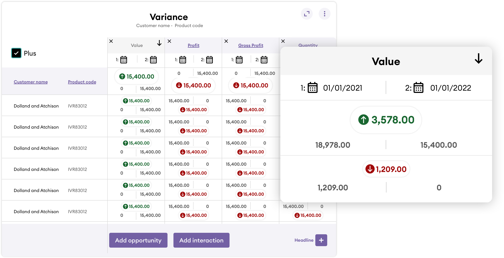
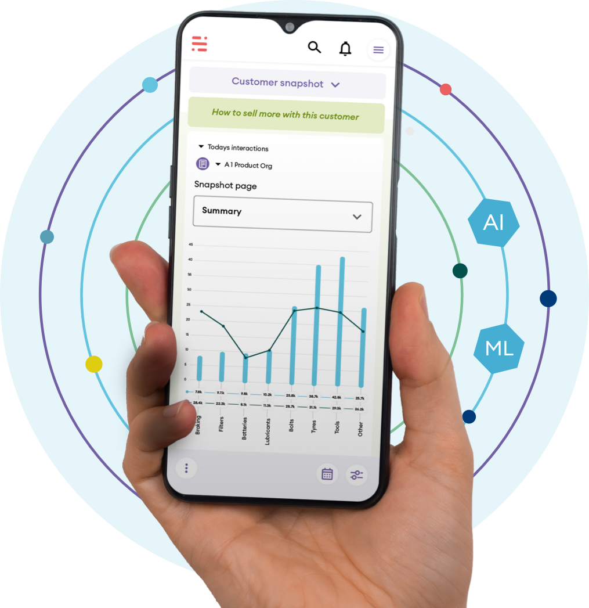

Data Visualisation


Data Mining

Utility UI

Integration of AI/ML
One of the central pillars of the approach was the integration of Artificial Intelligence (AI) and Machine Learning (ML) capabilities into the platform. This transformational step aimed to revolutionize sales intelligence by providing users with actionable insights and guided selling recommendations.
Cross-Functional Collaboration
I played a pivotal role in fostering a seamless collaboration between design and Agile development teams. I ensured that business stakeholders and end-users of the product were actively involved in the design and development process. Clear and consistent communication channels were established to gather insights and feedback iteratively.